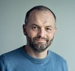
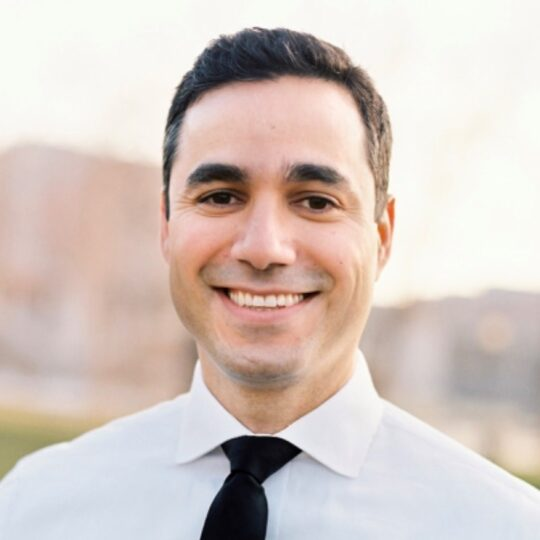

Invited Speakers
Confirmed and invited speakers will be announced here.

Biography
Prof. Hongliang Ren is a full professor at the Chinese University of Hong Kong (CUHK) in the Department of Electronic Engineering, where he received his Ph.D. in 2008. He has served as an Associate Editor for journals including IJRR, IEEE TRO/RAM, Transactions on Automation Science & Engineering, and Medical & Biological Engineering & Computing. His academic career includes positions at esteemed institutions such as Johns Hopkins University, Children’s Hospital Boston, Harvard Medical School, Children’s National Medical Center in the U.S., and the National University of Singapore.
His research covers topics such as biorobotics, medical mechatronics, and advanced control systems. Throughout his career, he has received 30+ awards, including the CUHK Young Researcher Award and the IAMBE Early Career Award in 2018. He has published over 240 papers, accumulating more than 27,770 citations and achieving an H-index of 66. Prof. Ren has given over 90 invited talks on intelligent surgical robotics, including more than 20 keynote speeches, and holds over 40 patents along with 4 published books. His research has appeared in over 16 prominent journals like Science Robotics, Science Advances, and Nature Communications. Ranked among the top 2% of most-cited scientists by Stanford University, he also acts as a reviewer and judge for international funding agencies, evaluating over 60 proposals from more than 10 countries and regions.

Biography
Dr. Yueming Jin is an Assistant Professor at the Department of Biomedical Engineering, and Electrical and Computer Engineering at the National University of Singapore, awarded by Presidential Young Professorship (PYP). She is also the PI of The N.1 and WisDM institutes in NUS. Her research interests are developing AI techniques for healthcare, with an emphasized application to medical data analysis, surgical data science and robotics. She is listed in Forbes 30 under 30 Asia, Class 2024. She received the 2026 Robert Brown Promising Researcher Award from the Ministry of Education (MOE), Singapore. She also received several premium paper awards, including three best paper awards in IJCARS-MICCAI 2021, ICRA 2021 and MedIA-MICCAI 2017; AAAI 2024 Most Influential Paper; IEEE TBME featuring paper 2025, etc. She serves as Program Chair of IPCAI’26, MIDL’26, MICCAI’28; Guest Associate Editor of IEEE TMI; Editorial Board Member of npj Digital Surgery. Her current Google Scholar citation is 9000+ with h-index 41.


Biography
Dr. Mostafa Toloui is a leading technology expert in medical technology and robotics. He currently serves as Head of Product for Healthcare Robotics at NVIDIA, where he leads product development for platforms such as NVIDIA Holoscan and Isaac for Healthcare.

Biography
Hao Ding is a Founding Engineer at Inner Logic and a researcher in surgical data science and surgical robotics, focused on efficient methods for building digital twin representations and their downstream applications.